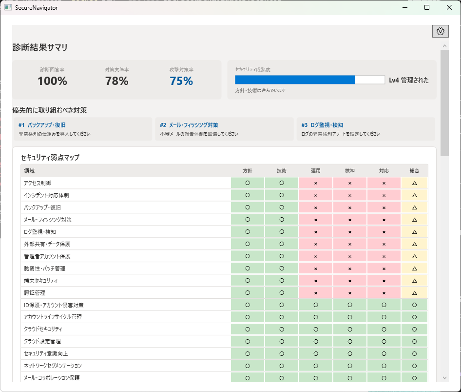
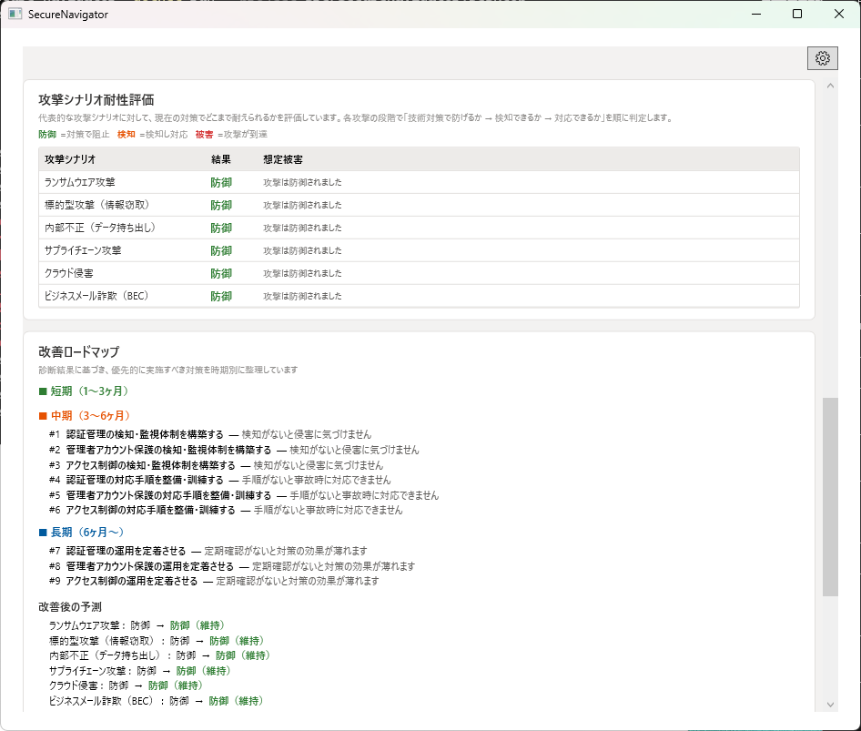
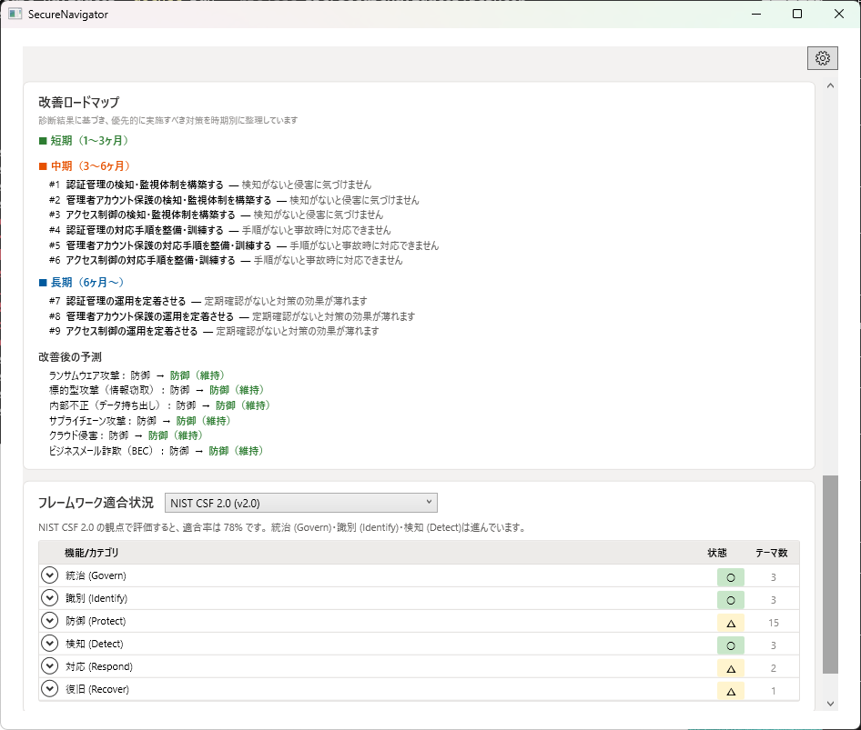
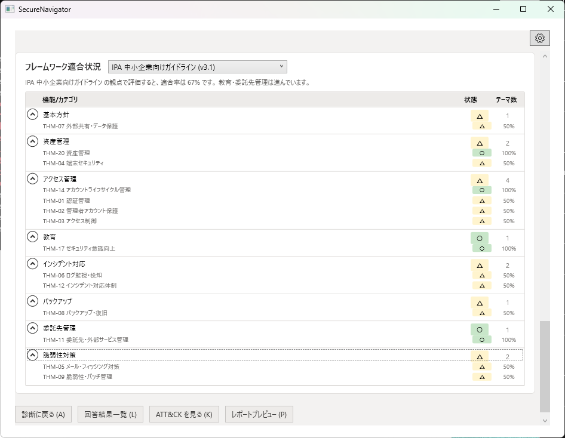
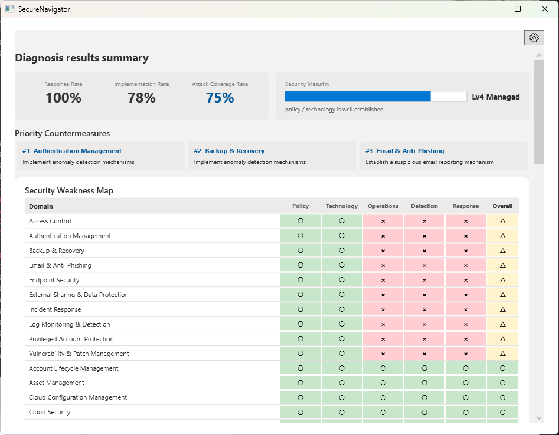
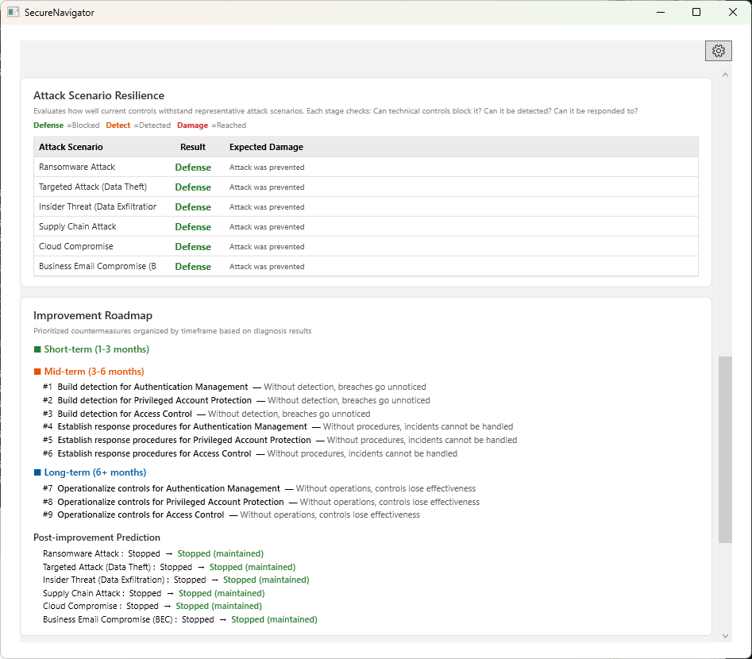
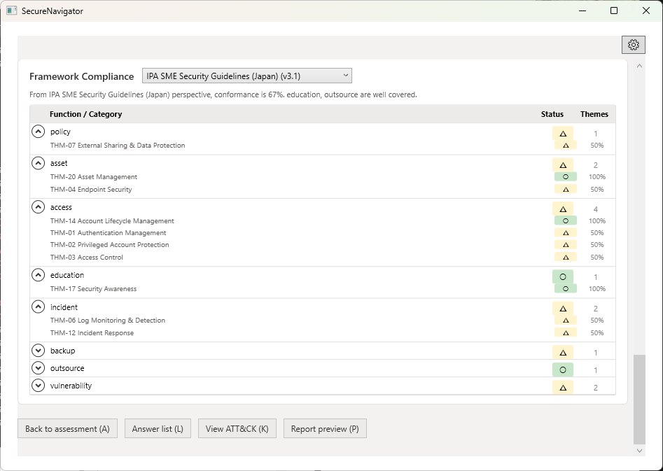
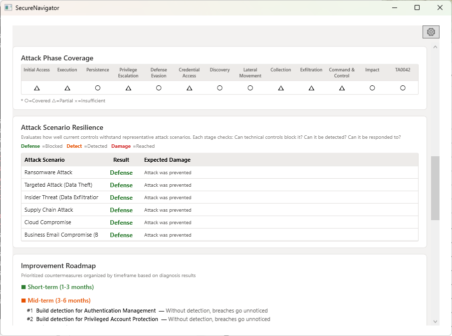

Chapter 4: 結果の確認
結果サマリ、ガイドライン対応状況、攻撃シナリオ、不足がみられる面とテーマ
結果画面の概要
ヒアリング画面の「結果を見る」で結果画面を開けます。回答の途中では暫定結果が表示されます。結果画面は複数のセクションで構成されており、組織のセキュリティ対策状況をさまざまな角度から確認できます。成熟度・弱点マップ・フレームワークなどの用語には、ポインターを合わせると補足が表示されます。

対策が十分でない領域の例
結果画面には、診断結果から、対策が十分でない領域の例が表示されます。これは診断結果からルールベースで算出された参考情報であり、利用者の環境や運用状況に合わせて判断してください。
弱点マップ（領域 x 観点のマトリクス）
弱点マップは、セキュリティ対策の領域ごとに、方針・技術・運用・検知・対応・総合の観点で状況を表示するマトリクスです。
各セルは対策の状況に応じて表示され、組織全体のセキュリティ対策のバランスと弱点を把握できます。凡例は、十分（80% 以上）・途中（21〜79%）・不足（20% 以下）です。

攻撃シナリオテーブル
SecureNavigator は6つの代表的な攻撃シナリオについて、回答から各ステップの守りの状態を評価します。表には、攻撃シナリオ・結果・想定被害が表示されます。
ステップごとの詳細は、「ATT&CK を見る」で開く攻撃ビュー画面で確認できます。

不足がみられる面とテーマ
診断結果から、実施が低い面とテーマを整理して表示します。面は、方針・技術・運用など、守りを見る観点の区分です。テーマは、質問をまとめた話題の区分（認証管理など）です。

フレームワーク参考確認
診断結果を各セキュリティフレームワーク・ガイドラインの要素に照らし合わせて、対応状況を参考情報として表示します。
| フレームワーク | 対応エディション |
|---|---|
| IPA 中小企業の情報セキュリティ対策ガイドライン | Free / Pro |
| 経済産業省 サイバーセキュリティ経営ガイドライン | Pro のみ |
| NIST Cybersecurity Framework 2.0 | Pro のみ |
フレームワーク参考確認は自己点検のための参考情報です。公的な認証、適合証明、公式な準拠判定を意味するものではありません。

Chapter 4: Viewing Results
Result summary, guideline mapping, attack scenarios, layers and themes with gaps
Results Screen Overview
Select "View Results" on the Hearing screen to open the Results screen. A provisional result is shown while answers are incomplete. It consists of multiple sections that present your organization's security posture from different perspectives. Hover over terms such as maturity, weakness map, and framework to see a short explanation.

Examples of Areas Where Controls Are Not Sufficient
The Results screen shows examples of areas where controls are not sufficient, based on the assessment results. They are rule-based reference information and should be evaluated against the user's environment and operating context.
Weakness Map (Domain x Perspective Matrix)
The weakness map is a matrix showing, for each domain, the status in terms of Policy, Technology, Operations, Detection, Response, and Overall.
Each cell reflects the control status, and a legend is shown with the map. This allows you to visually grasp the balance and gaps in your organization's security controls.

Attack Scenarios Table
SecureNavigator evaluates 6 representative attack scenarios at each step, based on your answers. The table shows the attack scenario, the result, and the expected damage.
Select "View ATT&CK" to open the Attack View screen and examine step-by-step details.

Layers and Themes with Gaps
Based on the assessment results, layers and themes with low implementation are listed. A layer is a viewpoint such as policy, technology, or operations. A theme is a topic group of questions, such as authentication.

Framework Reference Checks
Assessment results are mapped against elements of each security framework and guideline, displaying reference status views.
| Framework | Available In |
|---|---|
| IPA SME Information Security Guidelines | Free / Pro |
| METI Cybersecurity Management Guidelines | Pro only |
| NIST Cybersecurity Framework 2.0 | Pro only |
Framework reference checks are reference information for self-assessment. They do not constitute official certification, conformity attestation, or official compliance determination.